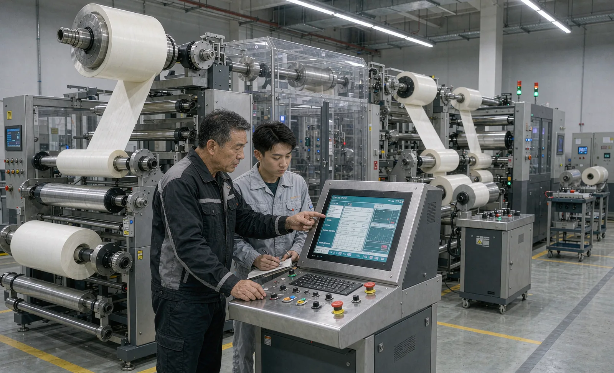
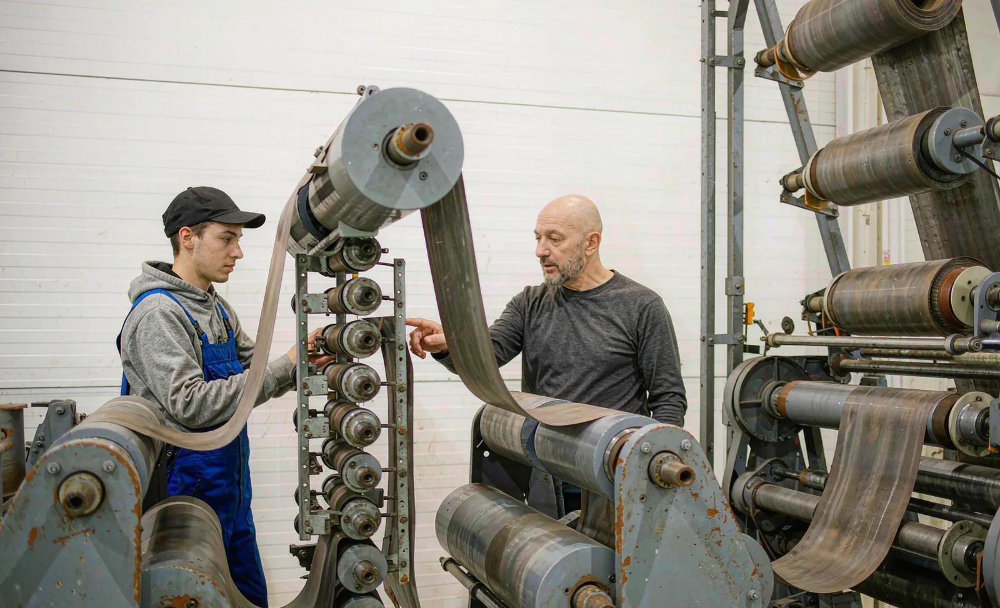

Published September 16, 2026 | By HDPTH Technical Editorial Team

Two plants can buy the same slitter rewinder and get very different results from it. The difference is rarely the machine — it is whether the people running it understand tension behaviour, knife setup and winding quality well enough to hold the rated speed. Untrained operation shows up quickly: nicked rolls, tension set by habit instead of recipe, blades scrapped by wrong handling, changeovers that take three times the planned time. Training is part of the machine’s effective performance and deserves the same specification discipline as the mechanics.
Why training belongs in the purchase decision
The weeks between commissioning and stable production are where projects quietly lose their payback: output is limited less by the machine than by the confidence of the crew standing at it. A plant that plans training before the order arrives reaches stable production in weeks; one that improvises can spend months at half rate. Put three commitments in the contract:
- OEM training scope: sessions at FAT or commissioning with duration, attendee numbers, language and deliverable materials (operator manual, setup guides, fault-finding charts) listed in the offer.
- Train-the-trainer content: the supplier teaches your selected people to teach others — this is what makes the knowledge survive staff turnover.
- Post-handover support for learning: follow-up days where supervisors can bring real production questions back to the supplier’s engineers.
OJT vs OEM training: what each one is actually for
Buyers often frame this as either/or. It is not — the two methods transfer different knowledge at different points in the timeline.
| Aspect | OEM training | On-the-job training (OJT) |
|---|---|---|
| Best for | Machine-specific knowledge: HMI, recipes, fault codes, supplier’s setup procedures | Plant-specific skill: your materials, your quality standards, your shift rhythm |
| Speed | Fast — years of supplier experience compressed into days | Slow but durable — skill built by repetition under a qualified mentor |
| Prerequisite | Basic machine safety and converting familiarity | A trained core who already know the machine |
| Typical timing | At FAT and commissioning, before handover | Weeks to months after handover, on production shifts |
| Who delivers it | Supplier commissioning engineers | Your shift leaders and trainers, supported by the competency checklist |
The practical pattern: OEM training certifies three to six people per line — at least one per shift plus a maintenance technician — and those people run the OJT program for everyone else. Sending only a single “machine owner” is the most expensive mistake, because one person on days cannot support a three-shift operation.
A machine-independent competency checklist
A competency checklist makes training auditable and shift-proof, signed off per operator by a qualified assessor with each item demonstrated hands-on:
- Safety: isolation and lockout-tagout behaviour, guarding and light-curtain discipline, emergency stops and restart procedure.
- Material handling: safe parent roll clamping, shaft and core handling, web threading routes from unwind to rewind.
- Tension and speed: selecting recipe tension values, recognising unstable tension, knowing when to stop rather than push through.
- Slitting setup: choosing razor, shear or score for the material, safe blade changes, correct knife overlap and clearance, checking slit quality at start-up.
- Winding quality: interpreting roll hardness profiles, recognising telescoping, starring and cinching, and naming their likely causes.
- Response to stops: structured reaction to web breaks and alarms — restore, diagnose, log the reason — instead of silent restarts.
The last item connects directly to downtime data: an operator trained to classify stops honestly is what makes your loss analysis trustworthy.
Staffing and coverage planning
Decide the crew model before commissioning. As a baseline for a single line: two trained operators per shift as a minimum, one of them a certified trainer or shift leader; one maintenance technician who attended the OEM mechanical and electrical sessions; and a process owner who manages recipes and quality standards. New hires should reach supervised competence before being counted in the crewing plan.
Keeping capability current
Training decays, and machines change. Run a short refresher whenever a recipe family, a blade system or the control software changes — and require that any supplier upgrade arrives with updated operator documentation and a training session. Audit the competency matrix against performance data: if one shift’s web break rate is visibly higher, the gap is usually a training gap, not a machine gap.

Contract training with the machine
Tell HDPTH your crew structure and material mix. We will propose an OEM training scope — sessions at FAT and commissioning, train-the-trainer materials and follow-up support — sized to your shifts, and include it in the offer.
Submit Your Project InquiryQuestions to put to every vendor
- What exactly is included in OEM training — hours, attendees, location, language and written materials?
- Do you provide train-the-trainer support and a competency checklist template for our OJT program?
- Is operator documentation updated automatically when control software is upgraded?
- Can commissioning engineers deliver follow-up training days after handover, and at what rate?
- How do your HMI and procedures support new operators — guided setups, prompts, fault explanations?
Planning an operator onboarding program?
Read our guides on the commissioning checklist and safety and guarding to align training content with handover and safety requirements, or send your questions directly.
Contact HDPTHFrequently asked questions
How long does it take to train a slitter rewinder operator?
Plan for 4 to 12 weeks from first contact to certified solo running, depending on the machine’s automation level. A highly automated turret slitter rewinder with recipe management and automatic knife positioning moves an experienced converting operator to solo running in weeks, while a mechanically set machine with manual knife setup and shaft handling takes months. The schedule should be written into the project plan at order placement, not improvised at commissioning.
Is OEM training worth the cost, or should we train ourselves on the job?
They solve different problems. OEM training transfers machine-specific knowledge — recipes, HMI structure, fault handling, the reasoning behind the supplier’s setup procedures — in days rather than months, and it is the fastest way to reach the nameplate rate safely. On-the-job training builds plant-specific skill such as material behaviour and quality judgement, but only after someone on site already knows the machine. The strongest plan uses OEM training to certify a core of trainers, then OJT to cascade the skill across shifts.
Who should attend the OEM training sessions?
At minimum: the shift leaders and at least one maintenance technician per shift, plus the production or process engineer who owns the recipes. Prioritise coverage over headcount — three trained people spread across three shifts beat eight trained people on one shift. If the supplier offers train-the-trainer material, insist on it: your own ability to re-teach is what survives staff turnover.
What does a machine-independent operator competency look like?
It covers six domains: safety (isolation, guarding, lockout-tagout behaviour), material handling (parent roll clamping, web threading routes), tension and speed (choosing and trimming settings, recognising unstable tension), slitting setup (method selection, knife handling, overlap and clearance concepts), winding quality (hardness profiles, defect recognition and causes), and structured response to web breaks and alarms. Each item should be demonstrable hands-on and signed off by a qualified assessor, not ticked from a classroom.
How do we keep training effective after the first year?
Keep a signed competency matrix per operator, audit it against real shift performance data such as web break frequency and setup time, and run short refresher sessions after every recipe change, blade system change or control upgrade. Fold a small training task into each planned maintenance stop, and require that any new control feature delivered by the supplier arrives with updated operator documentation and a training session included in the contract.
Sources
- OSHA: Machine guarding resources and requirements for mechanical power transmission and point-of-operation safety
- ANSI B11 committee: safety requirements for machinery, including safeguarding and safe use guidance
- UK HSE: Work equipment and machinery guidance, including operator training and instruction duties
- ISO 12100: Risk assessment and risk reduction — the basis for machine-specific training content